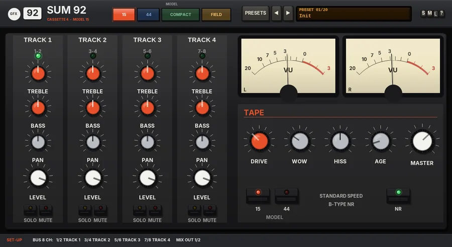
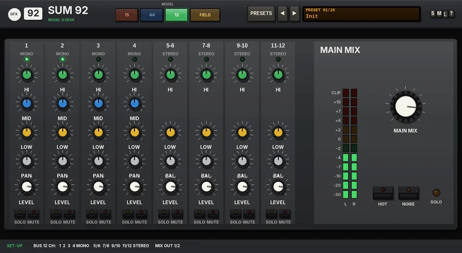
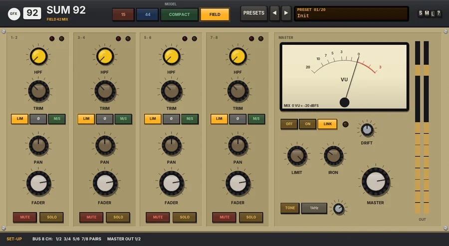

Sum 92
The 92 series summing mixer: the 15 and 44 cassette four-tracks, the Model 12 desk and the FIELD location mixer in one chassis.

Overview
Sum 92 is the summing mixer of the GFX 92 series: 90s domestic, portable and field gear - utilitarian, compact and mobile. It holds three summing mixers in one chassis, four models in all, and the MODEL keys choose which one is in the circuit:
- 15 - the cassette four-track at standard speed with B-type noise reduction (Cassette 4, model 15).
- 44 - the double-speed cassette four-track with compander noise reduction (Cassette 4, model 44).
- 12 - the little 12-channel desk from every 90s project studio (Model 12).
- FIELD - four stereo pairs through Field 42 preamps into one master (Field 42 Mix).
Each model is the original GFX plug-in, sample for sample: with the same settings Sum 92 sounds exactly like Cassette 4, Model 12 or Field 42 Mix (it nulls against them). Each keeps its own faceplate, controls and layout; the 15 / 44 and 12 faceplates are shown enlarged so they fill the chassis, which makes their labels bigger than on the originals. Only the selected model runs, so it costs no more CPU than the original on its own.
Reach for it for
- Summing stems through cassette tape, hiss, wow and all (15 / 44)
- A clean, slightly forward desk sum, or a gritty one with HOT (12)
- A location-mixer bus with transformer preamps, limiters and M/S (FIELD)
- Comparing three ways of summing the same stems
Setting up the routing in REAPER
- Create a bus track and put Sum 92 on it. Open the track's ROUTE window and set Track channels to 12 (that covers every model; 8 is enough for 15, 44 and FIELD).
- On each stem track, add a send to the bus track and pick its destination channel(s) for the model you use (the table below).
- Turn off the master / parent send on every stem track, so the stems are heard only through Sum 92.
- The mix always leaves on channels 1/2: leave the bus track's master send on. Channels a model does not use are ignored, and every output but 1/2 is silent.
- 15 / 44
- 8 channels: 1/2 TRACK 1, 3/4 TRACK 2, 5/6 TRACK 3, 7/8 TRACK 4 (stereo stems).
- 12
- 12 channels: 1, 2, 3 and 4 are MONO channels (send a mono source to a single channel), 5/6, 7/8, 9/10 and 11/12 are STEREO pairs.
- FIELD
- 8 channels: four stereo PAIRS on 1/2, 3/4, 5/6 and 7/8 (or a mid / side pair: left = mid, right = side).
The SET-UP line at the bottom of the panel shows the channel map of the selected model. If you switch between the 12 and the others, remember that their maps differ: channel 2, for example, is the right side of TRACK 1 on the 15 / 44 but its own mono channel on the 12.
Controls
The 92 chassis
The header
- 92 badge, name
- The series badge and the plug-in name; under the name, in the colour of the selected model, which model is in the circuit.
- MODEL
- 15, 44, 12 or FIELD. The 15 and the 44 share one Cassette 4 panel and one set of settings (as on the original), but each has its own tape machine, so changing between them also crossfades. Lit coloured keys: the lit key is the model in use (15 by default). Changing model crossfades over 20 ms, so it is click-free even while the music plays; the model you switch to starts from a clean state.
- PRESETS
- Opens the list of all 20 factory presets (a click on the preset display does the same). The list ends with Reset all to defaults.
- ◄ / ►
- Step to the previous or next preset.
- Preset display
- Shows the number and name of the preset in use. New instances open on Init.
- S / M / L
- Panel size: small, medium or large (Large is 1.3 times Medium). The panel also scales to fit the plugin window.
- ?
- Opens a pop-up with the design credit, the GFX website address and the address of this manual. Click anywhere to close it.
SET-UP line
- SET-UP
- The channel map of the selected model (see Setting up the routing).
Output clip
Every model's output passes the house soft clip at -0.3 dBFS: always on, no latency, no controls (it is part of the 92 chassis). It starts to round the peaks off about 2 dB below the ceiling; below that it does nothing. To keep normal mixes clear of it, the 15, the 44 and the 12 play 6 dB quieter than their originals: everything inside works exactly as on the original (the same tape drive, noise reduction, saturation, hiss and desk noise - the same colour), only the output is 6 dB lower, so the peaks reach the clip 6 dB later. FIELD plays at its original level (it always had its own clip).
Parameter list
Every control is also in REAPER's parameter list. The names start with the model they belong to (15/44 Tape drive, 12 Ch 1 level, FIELD 1-2 HPF ...).
15 / 44 - cassette four-track (Cassette 4)

Overview
Cassette 4 is a summing mixer in the spirit of the 80s portable multitrack recorders. Each of four stereo stems goes to its own track of the tape - recorded, played back through the heads - and is then mixed down through the recorder's little mixer with its simple tone controls, pan and level.
Every track gets its own tape path: noise-reduction encoding, tape saturation, the wobble of the transport, the head's top-end loss and bump, dropouts and hiss, and the decoding on the way back. All four tracks share one transport, so they wow and flutter together, just like on a real machine.
Two models are on board. MODEL 15 is the compact standard-speed machine: soft top end, fat head bump, more wow and hiss. MODEL 44 is the double-speed machine with compander noise reduction: more top end and steadier, with the gentle breathing and pumping that compander noise reduction is known for.
Reach for it for
- Lo-fi and bedroom-demo mixes
- Giving a whole track that warm, wobbly cassette character
- Gluing drums, keys and vocals with tape saturation
- Pumping, breathing tape compression (MODEL 44)
- Worn-out, nostalgic textures (AGE, HISS, WOW)
Controls
The mixer: TRACK 1 to TRACK 4
Four channel strips, each with its input channel pair printed under the name.
- Signal light
- Glows green when audio arrives on the track and it is being heard.
- TREBLE
- A high shelf at 10 kHz, -10 to +10 dB. Brighten a track that the tape has softened, or dull it further.
- BASS
- A low shelf at 100 Hz, -10 to +10 dB.
- PAN
- A balance control: in the centre both sides play at full level; turning it fades the opposite side down.
- LEVEL
- The track's mixdown level, from OFF (-60 dB) to +6 dB; 0 dB by default.
- SOLO
- Solo in place; several tracks can be soloed at once.
- MUTE
- Silences the track. A muted track stays muted even when soloed.
TAPE
- DRIVE (coloured cap)
- The recording level, -6 to +12 dB. Hotter means more tape saturation. It is level-matched, so it changes the colour rather than the volume.
- WOW
- Wow and flutter, 0 to 100 (30 by default): a slow wander plus a faster flutter. One transport moves all four tracks together. The 44 model is steadier at the same setting.
- HISS
- The tape noise, 0 to 100. The middle (50) is the model's own amount. Each track has its own hiss, so four busy tracks mean four times the noise, as on the real thing.
- AGE
- An older, worn tape, 0 to 100 (10 by default): the top end goes duller and short dropouts creep in, more often the higher you turn it.
- MASTER
- The final mix level, -24 to +12 dB.
- MODEL 15 / 44
- Picks the machine. 15: standard speed, B-type noise reduction, a soft top end around 9.5 kHz, a fatter head bump, more wow and hiss. 44: double speed, compander noise reduction, more top end (around 15 kHz), a steadier transport. The panel changes colour with the model.
- NR
- Noise reduction in or out. Out gives you the raw tape, hiss and all. In MODEL 44 the compander squeezes the signal 2:1 onto the tape and expands it 1:2 coming back; because the expander follows what comes off the tape, it breathes and pumps a little - turn DRIVE up to hear more of it.
Meters
- L / R
- VU meters showing the left and right mix output.
Tips
- The presets only change the model and the TAPE section; your track levels, EQ, pans, solos and mutes are left alone (except Reset).
- Use the TREBLE knobs on each track to win back a little top end after the tape, rather than turning AGE down to zero.
- Put drums or the busiest material on one track and pads on another: each track saturates on its own, so the mix stays clearer than squashing everything through one tape.
- Every track adds its own hiss even when nothing is sent to it, so MUTE the tracks you are not using to keep the noise floor down.
Model 12 - 12-channel desk
Model 12 replaces the former Compact 12.

Overview
Model 12 is a summing mixer in the spirit of the famous compact low-noise desks of the 90s: four mono channels and four stereo pairs, each with EQ, pan or balance, level, solo and mute, summed to a stereo main mix.
It is clean and honest, with the tight, slightly forward sound of its op-amps. Switch HOT on and the summing amps are driven into their rails for grit, edge and a little bite (level-matched, so it does not just get louder). NOISE adds the desk's own hiss floor.
Each channel strip can be named, and the names are saved with the project.
Reach for it for
- Summing stems or groups through a simple desk
- Quick level, pan and tone balancing of up to 12 inputs in one place
- Adding op-amp edge to a mix or drum bus (HOT)
- Lo-fi, 'real desk' character with the noise floor
- Solo and mute of stems while mixing
Controls
Channel strips
Eight strips: CH 1 to 4 are MONO, CH 5-6, 7-8, 9-10 and 11-12 are STEREO. Knobs: drag up and down (Shift for fine control) or use the mouse wheel; double-click to reset. The value shows while you hover.
- Name
- Click the name at the top of a strip and type (e.g. Drums). Enter keeps it, Escape cancels; an empty name goes back to the channel number.
- Signal light
- The green light glows when audio arrives on that channel and the channel is being heard (not muted, turned off or left out by a solo).
- HI (green cap)
- High shelf at 12 kHz, -15 to +15 dB.
- MID (blue cap)
- Mono channels only: a bell at 2.5 kHz, -12 to +12 dB.
- LOW (yellow cap)
- Low shelf at 80 Hz, -15 to +15 dB.
- PAN / BAL
- Mono channels: PAN, a constant-power pan from L100 to R100. Stereo channels: BAL, which turns the other side down as you move away from the centre.
- LEVEL
- The channel's level, from OFF (fully left, -60 dB) to +10 dB; 0 dB by default.
- SOLO
- Solo in place. Any number of channels can be soloed at once; while anything is soloed, only the soloed channels are heard.
- MUTE
- Silences the channel. A muted channel stays muted even when it is soloed.
MAIN MIX
- Meters
- 12-LED meters for the main mix, left and right. 0 is 0 VU (-18 dBFS); the top light is CLIP.
- MAIN MIX
- The main mix level into the summing amps, from OFF (-60 dB) to +10 dB.
- HOT
- Drives the summing amps into their rails: asymmetric op-amp grit, edge and a little bite, level-matched. Off, the amps stay clean up to just above 0 dBFS.
- NOISE
- Adds the desk's own hiss floor, about -84 dBFS.
- SOLO
- Flashes while any channel is soloed.
There is no output stage of its own: in Sum 92 the chassis soft clip at -0.3 dBFS follows the main mix (see Output clip).
Tips
- Name the strips as soon as the routing is done; it makes solo and mute much quicker to use.
- HOT is level-matched, so you can switch it in and out to judge the colour fairly.
- Use the MID on mono channels at 2.5 kHz to bring a vocal or guitar forward, or cut it to push them back.
- Keep the main-mix meters around 0 (0 VU) and below the red: that is where the desk sounds as intended.
- BAL on a stereo stem keeps both sides of the stem; to narrow it, do that on the stem's own track.
FIELD - four-pair location mixer (Field 42 Mix)

Overview
Field 42 Mix is the Field 42 channel as a four-pair location mixer: four stereo inputs summed to one stereo master. Each pair has the Field 42 front end (sweep HPF, transformer preamp, safety limiter), M/S decoding, pan, fader, mute and solo. The master has its own fader, the output limiter, the output transformer and a line-up tone. The VU reads the mix before the master fader; the LEDs read the master output.
Routing: the inputs arrive on the track's channels 1/2, 3/4, 5/6 and 7/8 and the master leaves on 1/2. Set the track to 8 channels (or more) in REAPER's routing window, then send each source to its pair - for example, a send to channels 3/4 for the second pair.
Reach for it for
- A submix of up to four stereo sources with location-mixer character
- Mid / side mic pairs, decoded with adjustable width
- Drum, band or field-recording submixes with a safety limiter on the master
Controls
Each pair (1 - 2, 3 - 4, 5 - 6, 7 - 8)
- Lights
- Red: the preamp's output above -1 dBFS. Amber: the input limiter working.
- HPF
- 80 to 240 Hz, 12 dB per octave, before the preamp; fully left is OFF.
- TRIM
- Gain into the preamp, -20 to +40 dB.
- LIM
- The input safety limiter (-2 dBFS, 20:1). On by default.
- Ø
- Polarity reverse. With M/S on it flips the side signal, swapping left and right.
- M/S
- Treats the pair as a mid / side mic: left = mid, right = side. PAN becomes WIDTH (0 - 200%, 100% by default).
- PAN / WIDTH
- Constant-loudness pan, +3 dB at the sides (a balance on stereo pairs), or the M/S width.
- FADER
- Unity at 0 dB; -40 dB (OFF) to +10 dB.
- MUTE / SOLO
- Mute the pair, or solo it (any solo mutes the pairs that aren't soloed).
MASTER
- VU meter
- The mix before the master fader, VU ballistics, 0 VU = -20 dBFS.
- OFF / ON / LINK
- The output limiter: off, each side on its own, or stereo-linked (the default). The light shows it working.
- LIMIT
- Its threshold, +4 to +20 dBu (-16 to 0 dBFS), 20:1.
- IRON
- The output transformer.
- DRIFT
- See Drift below.
- MASTER
- The master fader.
- TONE
- A line-up oscillator that replaces the mix: 1 kHz, 400 Hz or 100 Hz, -20 to +8 dBu.
- OUT meters
- The master output, left and right.
Parameter list only
FIELD Input iron (the input transformer's colour, 30% by default) and FIELD Limiter attack and release (1 ms and 200 ms by default).
Drift
DRIFT (0 - 100%, 50% by default) is battery sag. The supply voltage wanders slowly and droops under heavy, sustained level, so the preamps' headroom, the limiter thresholds and the transformers' drive all move a little - you hear it most when the unit is pushed. 50% is the standard amount, 100% twice that; 0% is a fresh battery.
Tips
- Watch the VU while setting the pair TRIMs, then use the faders to balance.
- For an M/S pair, record mid on the left and side on the right of one stereo item, then send it to a pair with M/S on.
Presets
Every preset of the three originals, named by model. Choosing one also selects its model. Like the originals, presets leave the channel levels, pans, mutes and solos as they are (Flat all channels and Reset all are the exceptions).
- Init
- The 15 at its default settings: the state a new instance opens in.
- 15: Bedroom Demo
- The standard-speed machine at its default settings, NR in.
- 15: Hot and Woolly
- Recorded hot, with more wow, hiss and age.
- 15: No NR, Old Tape
- Noise reduction off, lots of hiss, wobble and wear.
- 15: Worn-out Cassette
- Driven hard on a badly worn tape with heavy wow.
- 44: Clean Double Speed
- The double-speed machine at its cleanest.
- 44: Pumping Compander
- 6 dB of drive to bring out the compander's breathing.
- 44: Squashed Tape
- Driven hard for a dense, squashed tape sound.
- 44: Without NR
- The double-speed machine with the noise reduction out.
- 12: Clean Desk
- MAIN MIX at 0 dB, HOT and NOISE off.
- 12: Hot Desk
- HOT on: the summing amps driven into their rails.
- 12: Hot and Noisy
- HOT and NOISE both on - the real thing.
- 12: Clean with Desk Noise
- Clean amps with the hiss floor, MAIN MIX at -3 dB.
- 12: Flat all channels
- Every channel back to 0 dB level, flat EQ, centred, with solos and mutes off. The master section and channel names are left alone.
- FIELD: Init
- Everything clean and flat.
- FIELD: Drum Kit
- Gain on each pair, light HPFs on the toms and overheads, more iron and a lower master limit.
- FIELD: Field Rig
- Pair 1 as an M/S mic, HPFs for location work.
- FIELD: Band Sub
- Gentle HPFs and gain across the pairs.
- FIELD: Dialogue Pair
- Two dialogue pairs with HPF at 140 Hz.
- FIELD: Glue Bus
- A little gain everywhere, heavy iron and a low master limit.
- Reset all to defaults
- (Last in the list.) Every control of every model and the MODEL (back to 15) to their starting values. The channel names are kept.
Changing preset on the 15 / 44 is click-free: the tape ducks out for a moment, the new settings come in at silence and it fades back in (as on Cassette 4).
Tips
- Set the bus track to 12 channels once and wire the stems for the model you use most; the SET-UP line reminds you of the map.
- 15 and 44 share their settings, so the 15 / 44 keys are a straight A/B of the two tape machines on the same mix.
- The channel names (15 / 44 tracks and 12 channels) are kept separately, so each panel can carry its own labels.
- Only FIELD drifts (battery sag); the cassette models have their own wow and flutter instead.
File: gfx-sum-92.jsfx